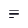
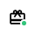
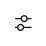

<ion-header>
  <ion-toolbar class="topHeader">
    <ion-buttons slot="start">
      <button>
        
      </button>
    </ion-buttons>
    <ion-title> Ana Sayfa </ion-title>
    <ion-buttons slot="primary">
      <button>
        
      </button>
      <button>
        
      </button>
    </ion-buttons>
  </ion-toolbar>
  <ion-toolbar>
    <div class="searchBarContainer">
      <ion-searchbar show-clear-button="never" class="custom" value="Mekan ara"></ion-searchbar>
      <div class="searchFilterIcon">
        
      </div>
    </div>
  </ion-toolbar>
</ion-header>